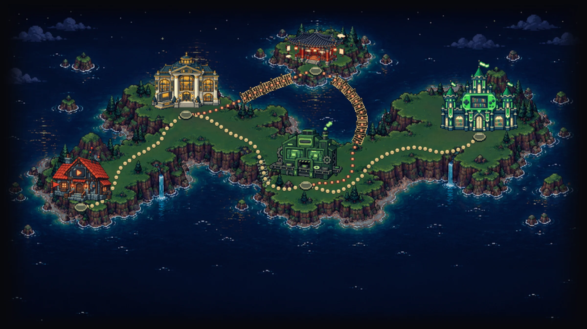
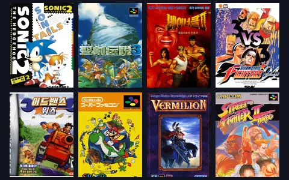
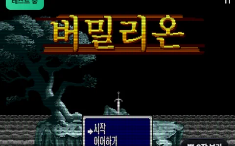
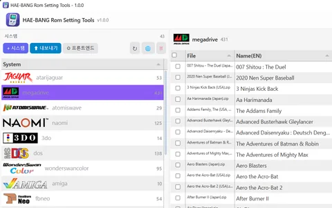
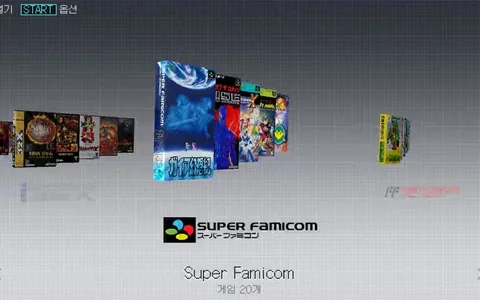

지금 HAE-BANG RETRO는
v1.1.2 베타 — 내보내기 전면 점검, Pegasus 외부 앱 실행 수정
RetroArch · ES-DE · Pegasus · 리눅스 기기 내보내기를 설정마다 다시 점검했습니다. Pegasus 에서 외부 앱이 게임 없이 앱만 뜨던 문제와 리맵을 켜면 내보내기가 멈추던 문제를 고쳤고, ES-DE 실행기는 3.5.0 에 맞추고 커뮤니티 실행기를 지원합니다. 리눅스 기기는 [연결] 없이도 롬 경로를 찾고, PRO 기기 시트는 PS Vita 설치 · DOS .dosz 변환을 더했습니다.
자세히 보기 →v1.1.1 베타 — AI 패키지 이미지 한글화, 3D박스 · 서포트 자동 생성
패키지 미디어 이미지를 AI 로 한글화하고, 게임을 추가할 때 3D박스 · 서포트(카트리지 · CD 등) 이미지를 자동으로 만들어 줍니다. 미디어 캐시 이동 옵션 · 코어 미설정 경고 · Pegasus 실행 명령 개선, PRO 게임 아카이브 리전 선택 · Pegasus 메타 중복 수정.
자세히 보기 →HB런처 베타 0.5 — 새 데모 영상과 실기기 영상
여러 게임기의 모델·텍스처를 다듬고, NES 카트리지·PSP UMD 를 입체로 만들었습니다. 내장 화면에서 영상을 보다가 바로 게임을 시작할 수 있고, 에뮬레이터 목록도 해방툴 기준으로 갱신했습니다. 베타 0.5 빌드 영상과 RG 476H 실기기 영상을 새로 올렸습니다.
새 영상 보기 →영상으로 보기
해방툴과 해방런처, 유튜브 재생목록에서 골라 보세요.


 Shorts
Shorts Shorts
Shorts
 Shorts
Shorts Shorts
Shorts레트로 게임 라이프, 한 장의 지도로
보고 배우고, 찾아보고, 한글로 바꾸고, 세팅하고, 즐기고 — 해방레트로의 모든 것이 한 길로 이어집니다.


게임 아카이브운영 중
9만 3천여 개 레트로 게임의 표지 · 스크린샷 · 영상 · 설명서를 웹에서 바로. 그 시절 그 게임, 다 여기 있어요.

대한글화시대 — 한글화 패치운영 중
일본어라 지나쳤던 게임도 한글로. 팬 번역 패치를 모아 두었고, 해방툴에서 우클릭 한 번으로 패치할 수 있어요.

해방툴v1.1 공개 · 베타 v1.1.2
롬 폴더만 넣으면 게임을 알아서 찾아 표지 · 영상 · 한글 제목을 채우고, 안드로이드 · 리눅스 게임기와 PC로 한 번에 보내 줍니다.

장소를 누르면 마스코트가 걸어가고, 대화 상자의 ◀ ▶ 로도 옮겨 다닐 수 있어요.
HAE-BANG RETRO가 만드는 것들
해방툴 — 롬 세팅 툴
v1.1 공개 배포 중수천 개의 롬을 자동 매칭하고 이미지·영상·매뉴얼과 한글 메타데이터까지 세팅해, ES-DE·Batocera 같은 프론트엔드와 휴대용 게임기로 한 번에 내보내는 Windows 앱. HAE-BANG RETRO의 심장입니다.
게임 아카이브
운영 중설치 없이 브라우저에서 수만 개의 레트로 게임 정보를 둘러보는 웹 아카이브. 시스템·연도·장르로 탐색하고, 한글 제목·설명과 박스아트·스크린샷·영상을 한 자리에서 만나 보세요.
HB런처
베타 0.5게임 케이스를 3D로 진열하는 새로운 에뮬레이터 런처. 케이스를 돌려 보고, 열어서 카트리지를 꺼내 콘솔에 꽂으면 게임이 시작됩니다. RetroArch 기본 호환, Windows·Android 지원, 해방툴과 직결.
한글화 패치 — 대한글화시대
운영 중흩어져 있는 레트로 게임 한글화 정보를 한 곳에 모은 '대한글화시대'. 한글화된 게임을 찾아보세요. 해방툴의 한글판 매칭·메타데이터와 더 깊이 이어지도록 연동을 준비하고 있습니다.
무엇이든 물어보세요
버그 제보, 기능 제안, 협업 문의 — 아래로 보내 주시면 메일로 답장드립니다.